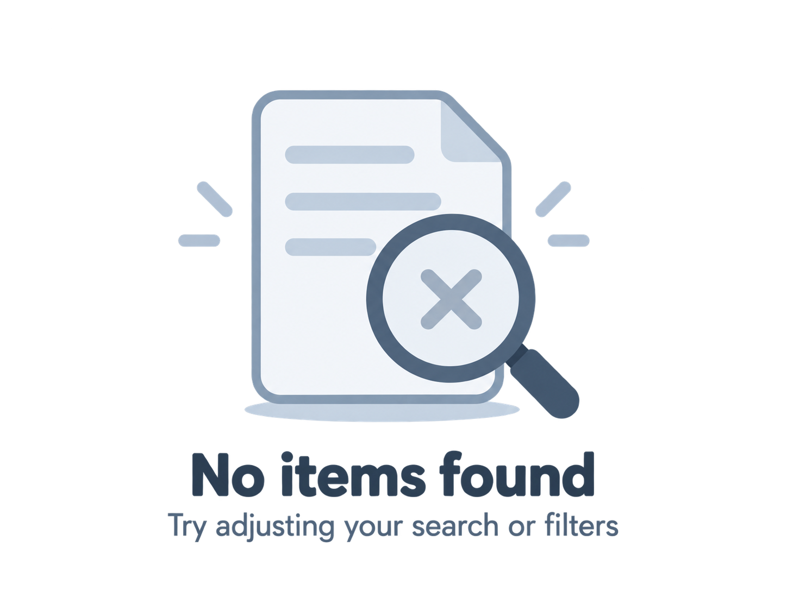

CỘNG ĐỒNG USTH
Tin nhặt được
Các đồ vật được cộng đồng USTH nhặt và đăng thông tin để tìm lại chủ sở hữu.
Tin nhặt được
6 kết quả

Không tìm thấy tin phù hợp
Hãy thử từ khóa hoặc bộ lọc khác.
Các đồ vật được cộng đồng USTH nhặt và đăng thông tin để tìm lại chủ sở hữu.

Hãy thử từ khóa hoặc bộ lọc khác.